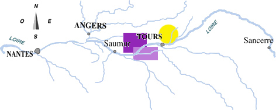

- Qu'est-ce que vous regardez ? C'est la carte routière ?
- Non ! C'est la carte des vins. C'est pour éviter les bouchons !
Fernand Reynaud Raymond Devos
Localisation

Carte des vins de Touraine
Présentation des appellations
Bourgueil
Localisation :
Classement des vins
Millésimes des vins de Touraine
Années
2021 2022 2023 2024
Rouge 15 17 14 17
Blanc 12 18 15 15
Qualité
Glossaire
Bachique
Relatif au dieu du vin romain, Bacchus
Tuffeau
Roche calcaire poreuse de couleur blanche
Les vins du Pays Nantais - Les vins d'Anjou-Saumur - Les vins du Centre
Contact
Page réalisée par les étudiants de BUT Groupe 1 2 le 1er septembre 2025
Webmaster : james.bond@scotl-yard.uk
Page sponsorisée par Santé Publique France